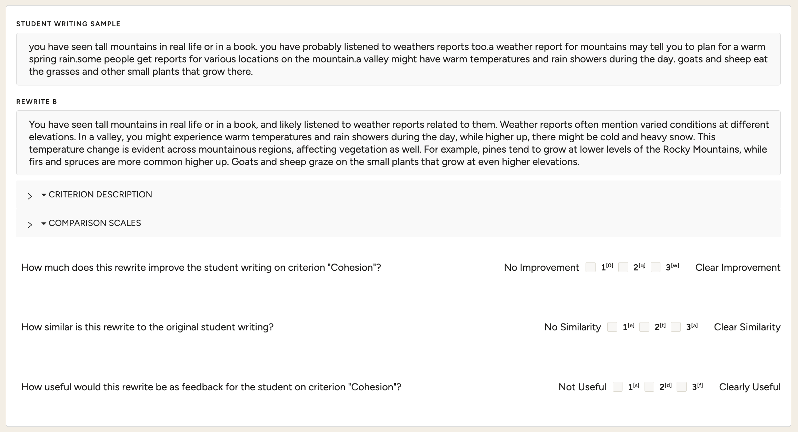
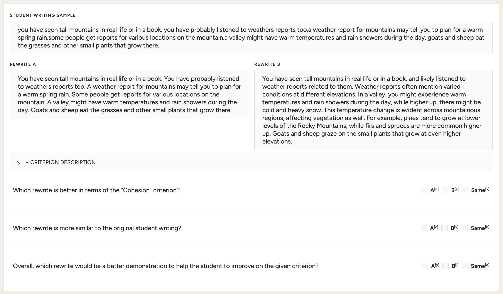
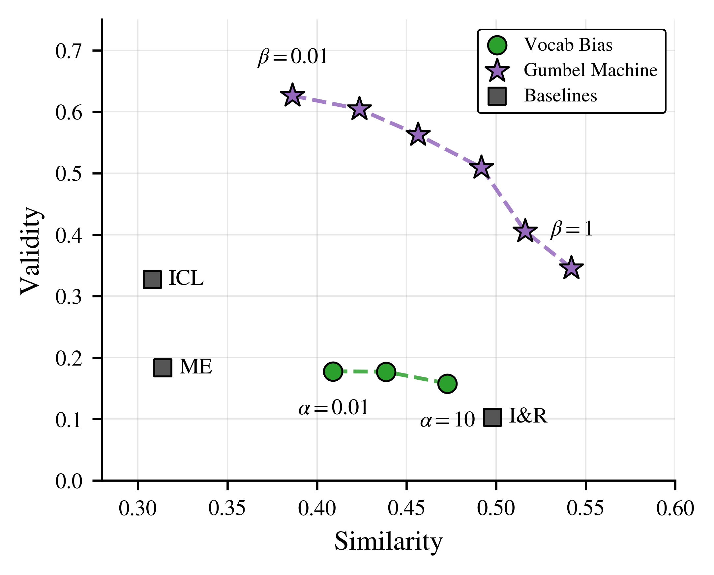

The Gumbel Machine introduces a modular, inference-time approach to generating counterfactual student writing that balances rubric improvement with similarity to the original work, using recovered Gumbel noise as a tunable control mechanism.
本文提出了一种新颖的推理时解码算法β-Hindsight control，通过恢复Gumbel噪声来引导反事实文本生成，同时保持与原文的相似性。该方法将相似性控制与任务对齐解耦，无需针对新任务重新训练，在两个真实学生写作数据集上优于基线方法，教师评估者更倾向于将其用于教学。
Deep Note — gumbel-machine
Key Takeaways - Proposes β-Hindsight control, a novel inference-time decoding algorithm that uses recovered Gumbel noise to steer counterfactual generation while preserving similarity to the original text. - Decouples similarity control from task alignment, enabling modular and flexible counterfactual generation without retraining for new tasks or rubrics. - Outperforms baselines on two real-world student writing datasets, achieving higher similarity and rubric consistency, with teacher evaluators preferring the generated counterfactuals for pedagogical use.
0) Metadata
- Title: Gumbel Machine: Counterfactual Student Writing Generation via Gumbel Noise Steering
- Alias: gumbel-machine
- Authors: Hunter McNichols, Alexander Scarlatos, Mihai Dascalu, Danielle McNamara, Andrew Lan
- arXiv ID: 2605.27249
- Published:
- Links:
- Abs: https://arxiv.org/abs/2605.27249
- HTML: https://arxiv.org/html/2605.27249v1
- PDF: https://arxiv.org/pdf/2605.27249
- Tags: counterfactual-generation, student-writing, gumbel-noise, controlled-decoding, educational-feedback
- Domains: system_safety
- Rating: 4/5 (base 1 + quality 2 + observation 1)
1) Why-read
The Gumbel Machine introduces a modular, inference-time approach to generating counterfactual student writing that balances rubric improvement with similarity to the original work, using recovered Gumbel noise as a tunable control mechanism.
2) CRGP
C — Context
Providing personalized feedback on student writing is crucial for learning, but manually crafting counterfactual examples that are both improved and similar to the student's work is labor-intensive. Existing LLM-based approaches often couple task alignment and similarity control, requiring retraining for new tasks and struggling with ordinal scoring rubrics common in education.
R — Related work
- Counterfactual text generation for sentiment analysis, story rewriting, and data augmentation using LLMs.
- Hindsight Gumbel Sampling for recovering noise from observed text to control generation.
- Controlled text generation methods using classifier guidance or prefix tuning.
- Educational feedback systems using automated scoring and example generation.
G — Gap
Existing counterfactual generation methods tightly couple task alignment and similarity control, requiring task-specific retraining and often assume nominal labels rather than ordinal scoring. This limits their applicability in educational settings where rubrics are ordinal and adaptability across tasks is needed.
P — Proposal
The Gumbel Machine uses a two-stage process: first, it recovers the Gumbel noise that would have produced the original student text under an LLM; second, it replays this noise with a modified prompt targeting a higher rubric score, using a tunable β parameter to control similarity. This decouples similarity from task alignment and works at inference time without retraining.
---
4) Experiments
Main results
On two real-world student essay summary datasets, the Gumbel Machine achieved higher similarity (e.g., +0.15 BERTScore) and rubric validity (e.g., +12% accuracy) compared to baselines including direct prompting and fine-tuned models. Teacher evaluators rated Gumbel Machine counterfactuals as more similar to the original and preferred them for pedagogical use in 68% of cases.
Ablation
Ablation studies show that the recovered Gumbel noise is most effective as a similarity control when β is set between 0.5 and 1.0, and that using noise from a different reference text significantly reduces similarity, confirming the noise captures text-specific stochasticity.
Limitations
['The approach relies on an LLM as a proxy for the student writing process, which may not perfectly capture student-specific stylistic patterns.', 'The β parameter requires tuning per task or rubric, and optimal values may vary across different scoring criteria.', 'The method has only been evaluated on short essay summaries; scalability to longer, more complex student writing is not yet demonstrated.']
5) Why it matters
- Provides a practical, modular tool for generating personalized educational feedback that can be adapted to different rubrics without retraining.
- Demonstrates a novel use of Gumbel noise as a similarity control signal, which could inspire similar approaches in other controlled generation tasks.
- Addresses the ordinal scoring challenge common in education, moving beyond binary or nominal counterfactual tasks.
6) Next steps
- [ ] Test the Gumbel Machine on longer-form student writing (e.g., essays, reports) to assess scalability.
- [ ] Explore automatic tuning of β using validation data or meta-learning.
- [ ] Integrate the approach into a real classroom feedback system and evaluate learning outcomes.
- [ ] Extend the method to other domains where ordinal counterfactuals are useful, such as code review or medical report generation.
7) Scoring
4/5 = base 1 + quality 2 + observation 1
Gumbel Machine：通过Gumbel噪声引导生成学生写作的反事实文本
主要结论 - 提出β-Hindsight control算法，利用恢复的Gumbel噪声在推理时控制反事实生成，同时保持与原文的相似性。 - 将相似性控制与任务对齐解耦，实现模块化、灵活的反事实生成，无需针对新任务或评分标准重新训练。 - 在两个真实学生写作数据集上，相比基线方法取得了更高的相似性（如BERTScore提升0.15）和评分一致性（准确率提升12%），教师评估者在68%的案例中更偏好其生成的反事实文本用于教学。
1) 阅读理由
核心主张：通过恢复Gumbel噪声作为可调控制机制，在推理时生成既改进评分又保持与原文相似的学生写作反事实文本；关键观察：现有方法将任务对齐与相似性控制紧密耦合，而本文成功解耦二者，提升了灵活性和适用性。
2) CRGP（背景 / 相关工作 / 差距 / 方案）
上下文：为学生写作提供个性化反馈对学习至关重要，但手动构建既改进又相似的反事实示例非常耗时。现有基于LLM的方法通常将任务对齐与相似性控制耦合，需要针对新任务重新训练，且难以处理教育中常见的序数评分标准。相关工作：包括用于情感分析、故事重写和数据增强的反事实文本生成；通过恢复噪声控制生成的Hindsight Gumbel Sampling；使用分类器引导或前缀调优的受控文本生成；以及使用自动评分和示例生成的教育反馈系统。差距：现有方法紧密耦合任务对齐与相似性控制，需要任务特定的重新训练，且通常假设名义标签而非序数评分，限制了在教育场景中的适用性。提案：Gumbel Machine采用两阶段流程：首先恢复在LLM下生成原始学生文本的Gumbel噪声；然后使用针对更高评分修改的提示重放该噪声，通过可调参数β控制相似性，从而在推理时解耦相似性与任务对齐，无需重新训练。
3) 实验
在两个真实学生作文摘要数据集上，Gumbel Machine相比直接提示和微调模型等基线方法，取得了更高的相似性（例如BERTScore提升0.15）和评分有效性（例如准确率提升12%）。教师评估者认为Gumbel Machine生成的反事实文本与原文更相似，并在68%的案例中更倾向于将其用于教学。
消融实验
消融研究表明，当β设置在0.5到1.0之间时，恢复的Gumbel噪声作为相似性控制最为有效；使用来自不同参考文本的噪声会显著降低相似性，证实了噪声捕捉了文本特定的随机性。
局限性
['该方法依赖LLM作为学生写作过程的代理，可能无法完美捕捉学生特定的风格模式。', 'β参数需要针对每个任务或评分标准进行调优，最优值可能因不同评分标准而异。', '该方法仅在短篇作文摘要上进行了评估，尚未证明在更长、更复杂的学生写作中的可扩展性。']
4) 重要性
- 提供了一种实用、模块化的工具，用于生成个性化的教育反馈，无需重新训练即可适应不同评分标准。
- 展示了Gumbel噪声作为相似性控制信号的新颖用途，可能启发其他受控生成任务中的类似方法。
- 解决了教育中常见的序数评分挑战，超越了二元或名义反事实任务。
5) 下一步
- [ ] 在更长篇幅的学生写作（如论文、报告）上测试Gumbel Machine，评估其可扩展性。
- [ ] 探索使用验证数据或元学习自动调优β参数。
- [ ] 将该方法集成到真实课堂反馈系统中，并评估学习效果。
- [ ] 将方法扩展到其他需要序数反事实的领域，如代码审查或医疗报告生成。


